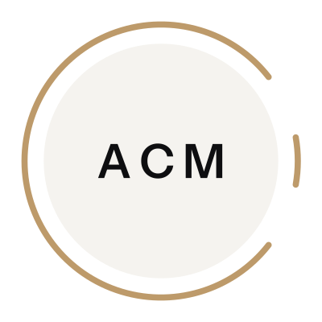

Luni, 16 noiembrie
21:41
Oradea · 4° senin
Baterie 75%
Se încarcă · 38 min
Sistem
Pornire:
9,8 s
Memorie:
1,1 / 4 GB
Actualizat:
la zi
pub
Acțiuni
Aplicații
Varianta C · Olive — verdele ACM, totul pornește din căutare